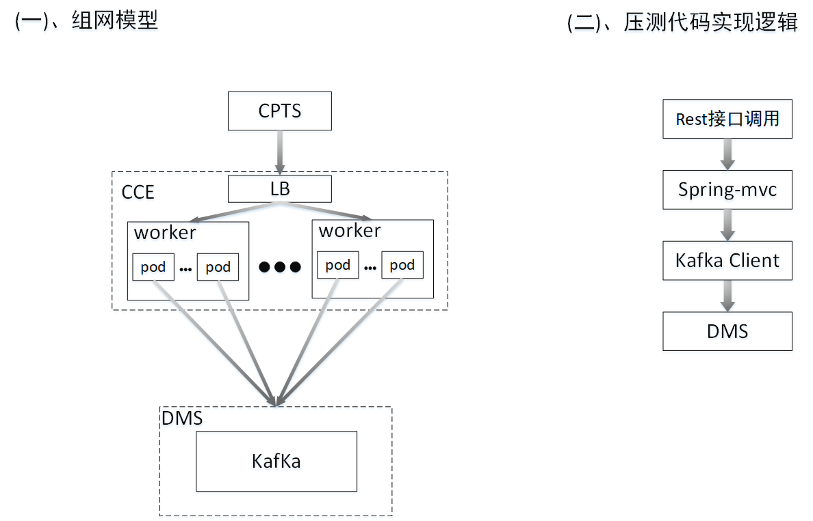

{
"topic":"k-0e964f1ae251477ebbfe8cd85e758ee6-0df351cc-5f98-4b78-b71b-3d41c683f55f", #topic id
"msgCount":"10", #单次调用发送消息的数量
"msg":"Message body" #消息体
}
{
"errCode":"KAFKA.200",
"msg":"SUCCESS"
}
{
"topic":"k-0e964f1ae251477ebbfe8cd85e758ee6-c31d64da-9d44-4abe-b808-a542b8027378", #topic id
"groupId":"g-68d15c6b-0523-4467-96c2-7df769d3b08b", #group id
"timeout":"200" #消费客户端超时时间
}
{
"errCode":"KAFKA.200",
"pollCount":0, #本次调用消费的消息数量
"msg":"SUCCESS"
}